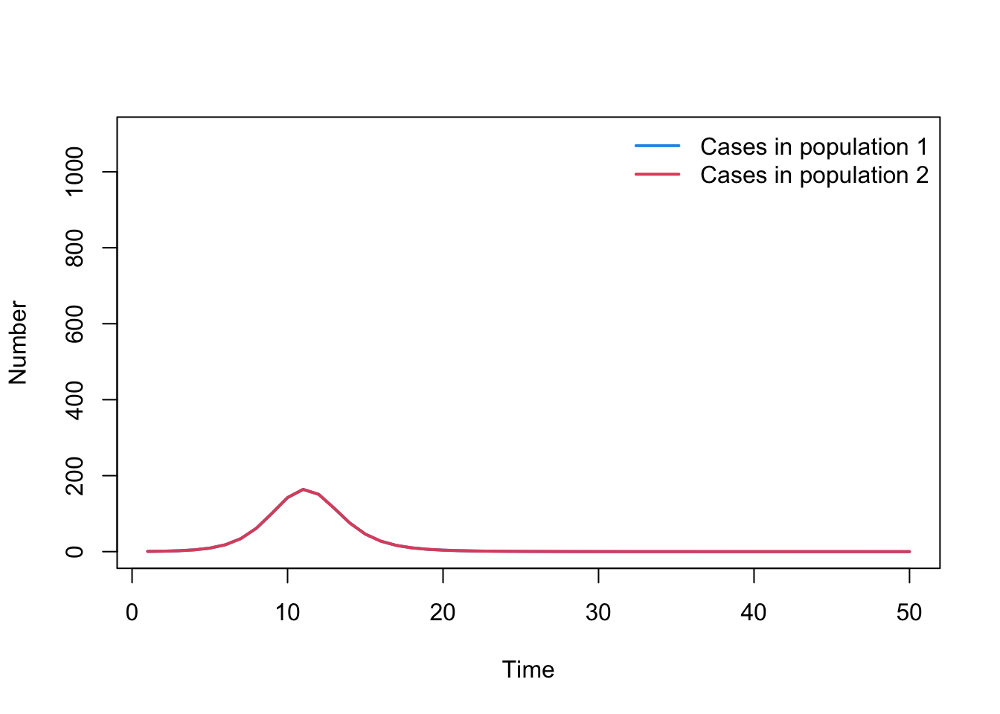

# Load in the deSolve package
library(deSolve)
# If the package is not installed, install using the install.packages() function
# Define model function
SIR_metapop_model <- function(times, state, parms){
## Define variables
S1 <- state["S1"]
I1 <- state["I1"]
R1 <- state["R1"]
C1 <- state["C1"]
N1 <- S1 + I1 + R1
S2 <- state["S2"]
I2 <- state["I2"]
R2 <- state["R2"]
C2 <- state["C2"]
N2 <- S2 + I2 + R2
# Extract parameters
beta <- parms["beta"]
gamma <- parms["gamma"]
alpha <- parms["alpha"]
lambda1 <- (beta * I1 / N1 + alpha * beta * I2 / N2)
lambda2 <- (beta * I2 / N2 + alpha * beta * I1 / N1)
# Define differential equations
dS1 <- - lambda1 * S1
dI1 <- lambda1 * S1 - gamma * I1
dR1 <- gamma * I1
dC1 <- lambda1 * S1
dS2 <- - lambda2 * S2
dI2 <- lambda2 * S2 - gamma * I2
dR2 <- gamma * I2
dC2 <- lambda2 * S2
res <- list(c(dS1, dI1, dR1, dC1, dS2, dI2, dR2, dC2))
return(res)
}
# Define parameters
parameters <- c( beta = 0.4, gamma = 0.1, alpha = 1)
# Define time to run model
times <- seq(from = 0, to = 50, by = 1)
# Define initial conditions
N1 <- 1000; N2 <- 1000
I1_0 <- 1; I2_0 <- 0
R1_0 <- 0; R2_0 <- 0
C1_0 <- 0; C2_0 <- 0
S1_0 <- N1 - I1_0
S2_0 <- N2 - I2_0
state <- c(S1 = S1_0, I1 = I1_0, R1 = R1_0, C1 = C1_0,
S2 = S2_0, I2 = I2_0, R2 = R2_0, C2 = C2_0)
# Solve equations
output_raw <- ode(y = state,
times = times,
func = SIR_metapop_model,
parms = parameters,
method = rk4)
# Convert to data frame for easy extraction of columns
output <- as.data.frame(output_raw)
# Plot output
par(mfrow = c(1, 1))
plot(output$time, output$I1, type = "l", col = 4, lwd = 2, ylim = c(0, N1),
xlab = "Time", ylab = "Number", main = "")
lines(output$time, output$I2, lwd = 2, col = 2, type = "l")
legend("topright",
legend = c("Infected in population 1",
"Infected in population 2"),
lty = rep(1, 2), col = c(4, 2), lwd = 2, bty = "n")05. Metapopulations with ODEs: Solutions
Click here to return to the practical.
The code below has been written to solve a Susceptible-Infected-Recovered model with two populations. Familiarise yourself with the expanded model before moving onto the activities that follow. Note: the compartments C1 and C2 reflect the cumulative numbers of people infected. This will be used later on.
Question A
When you simulate the above model, you’ll notice that currently the epidemics are nearly identical in the two populations. Update the model parameters so the transmission rate between the two populations is equal to 5% of the transmission rate within each population. What happens to the size and timing of the epidemics?
Answer: Epidemic is delayed with slightly smaller peak in population 2 because takes time for infection to spread.
parameters <- c( beta = 0.4, gamma = 0.1, alpha = 0.05)Question B
What happens if the epidemic starts with 10 people infected in both populations? Why does this happen?
Answer: Epidemics are identical because initial conditions are the same. Although there is some connectivity between populations, it is symmetrical, so same dynamics in both.
Question C
The model is currently set up to record the number of cumulative cases in each population (i.e. C1 and C2). The below code will plot these cumulative numbers of cases. Update the code so you are plotting incidence, i.e. new cases appearing over time, rather than cumulative cases.
par(mfrow = c(1, 1))
plot(output$time, output$C1, type = "l", col = 4, lwd = 2, ylim = c(0, N1+100),
xlab = "Time", ylab = "Number", main = "")
lines( output$time, output$C2, lwd = 2, col = 2, type = "l")
legend("topright",
legend = c("Cumulative cases in population 1",
"Cumulative cases in population 2"),
lty = rep(1, 2), col = c(4, 2), lwd = 2, bty = "n")Hint: Create a new variable that calculates the difference between adjacent timesteps, i.e. C1[2:t] - C1[1:(t-1)]
Answer:
cases1 <- tail(output$C1,-1) - head(output$C1,-1)
cases2 <- tail(output$C2,-1) - head(output$C2,-1)
time_cases <- tail(output$time,-1)
plot( time_cases, cases1, type = "l", col = 4, lwd = 2, ylim = c(0, N1+100),
xlab = "Time", ylab = "Number", main = "")
lines( time_cases, cases2, lwd = 2, col = 2, type = "l")
legend("topright", legend = c("Cases in population 1", "Cases in population 2"),
lty = rep(1, 2), col = c(4, 2), lwd = 2, bty = "n")
Question D
What does the incidence look like if only 50% of the cases in population 2 are reported?
Hint: There are several ways to do this - some are easier than others.
Answer:
cases2 <- 0.5*cases2
plot( time_cases, cases1, type = "l", col = 4, lwd = 2, ylim = c(0, N1+100),
xlab = "Time", ylab = "Number", main = "")
lines( time_cases, cases2, lwd = 2, col = 2, type = "l")
legend("topright", legend = c("Cases in population 1", "Cases in population 2"),
lty = rep(1, 2), col = c(4, 2), lwd = 2, bty = "n")Question E
If you have time, expand the model to include three populations (denoted 1, 2, 3). How would you model an epidemic where:
mixing between population 1 and population 2 is 5% of the rate of mixing within these populations
mixing between population 1 and population 3 is 10% of the rate of mixing within these populations
there is no mixing between population 2 and population 3
Answer:
# Define model function
SIR_metapop_model_3 <- function(times, state, parms){
## Define variables
S1 <- state["S1"]
I1 <- state["I1"]
R1 <- state["R1"]
C1 <- state["C1"]
N1 <- S1 + I1 + R1
S2 <- state["S2"]
I2 <- state["I2"]
R2 <- state["R2"]
C2 <- state["C2"]
N2 <- S2 + I2 + R2
S3 <- state["S3"]
I3 <- state["I3"]
R3 <- state["R3"]
C3 <- state["C3"]
N3 <- S3 + I3 + R3
# Extract parameters
beta <- parms["beta"]
gamma <- parms["gamma"]
alpha1 <- parms["alpha1"]
alpha2 <- parms["alpha2"]
lambda1 <- (beta * I1 / N1 + alpha1 * beta * I2 / N2 + alpha2 * beta * I3 / N3)
lambda2 <- (beta * I2 / N2 + alpha1 * beta * I1 / N1)
lambda3 <- (beta * I3 / N3 + alpha2 * beta * I1 / N1)
# Define differential equations
dS1 <- - lambda1 * S1
dI1 <- lambda1 * S1 - gamma * I1
dR1 <- gamma * I1
dC1 <- lambda1 * S1
dS2 <- - lambda2 * S2
dI2 <- lambda2 * S2 - gamma * I2
dR2 <- gamma * I2
dC2 <- lambda2 * S2
dS3 <- - lambda3 * S3
dI3 <- lambda3 * S3 - gamma * I3
dR3 <- gamma * I3
dC3 <- lambda3 * S3
res <- list(c(dS1, dI1, dR1, dC1, dS2, dI2, dR2, dC2, dS3, dI3, dR3, dC3))
return(res)
}
# Define parameters
parameters <- c( beta = 0.4, gamma = 0.1, alpha1 = 0.05, alpha2 = 0.1)
# Define time to run model
times <- seq(from = 0, to = 50, by = 1)
# Define initial conditions
N1 <- 1000; N2 <- 1000; N3 <- 1000
I1_0 <- 1; I2_0 <- 0; I3_0 <- 0
R1_0 <- 0; R2_0 <- 0; R3_0 <- 0
C1_0 <- 0; C2_0 <- 0; C3_0 <- 0
S1_0 <- N1 - I1_0; S2_0 <- N2 - I2_0; S3_0 <- N3 - I3_0
state <- c(S1 = S1_0, I1 = I1_0, R1 = R1_0, C1 = C1_0, S2 = S2_0, I2 = I2_0,
R2 = R2_0, C2 = C2_0, S3 = S3_0, I3 = I3_0, R3 = R3_0, C3 = C3_0)
# Solve equations
output_raw <- ode(y = state,
times = times,
func = SIR_metapop_model_3,
parms = parameters,
method = rk4)
# Convert to data frame for easy extraction of columns
output <- as.data.frame(output_raw)
# Plot output
par( mfrow = c(1, 1))
plot( output$time, output$I1, type = "l", col = 4, lwd = 2, ylim = c(0, N1),
xlab = "Time", ylab = "Number", main = "")
lines( output$time, output$I2, lwd = 2, col = 2, type = "l")
lines( output$time, output$I3, lwd = 2, col = 3, type = "l")
legend("topright",
legend = c("Infected in population 1",
"Infected in population 2",
"Infected in population 3"),
lty = rep(1, 2), col = c(4, 2,3), lwd = 2, bty = "n")